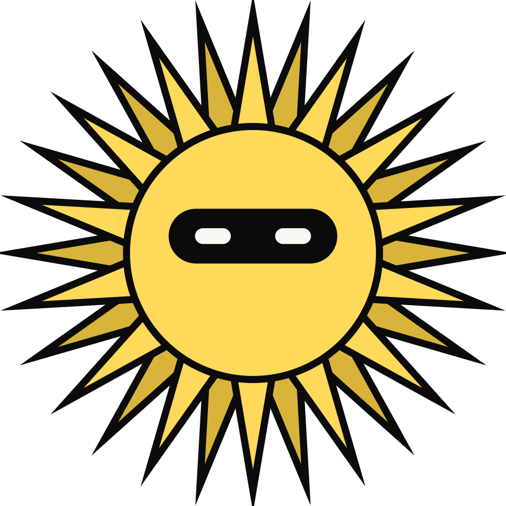

phonefix · one command. every phone.
Built for a
laptop
. Fixed for every
thumb
.
by SPIKE Studio · Dubai
spikestudiodxb.com · desktop 1440px
same site · iPhone 15 · passes phonefix
$
npx
skills add kp6801-ai/phonefix